Configurações de Produção - Aba MRP
Para acessar as Configurações de produção é necessário ir no menu:
Administração -> Definição -> Produção -> Configurações de produção
Na aba “MRP” da tela de “Configuração de produção” são configurados os parâmetros do processo de MRP.
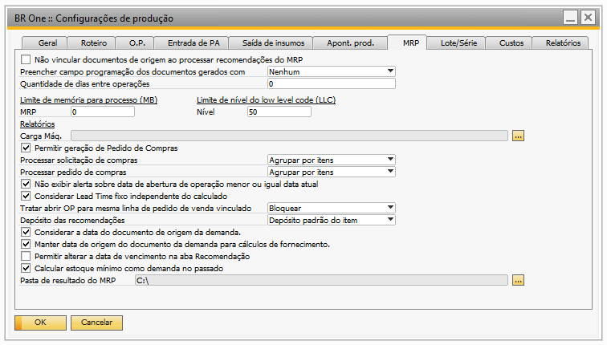-Não vincular documentos de origem ao processar recomendações do MRP
Quando esse flag está desmarcado, todos os documentos criados requisitando e/ou atribuindo itens ao estoque serão vinculados à OP criada através da recomendação do MRP.
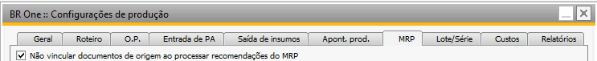Por exemplo, foi criado um pedido de venda para o item “A” solicitando 1000 desse item:

O item “A” é um item de produção. Seu roteiro é composto pelo item “B”,que também é um item de produção, e o item de compra “C”:
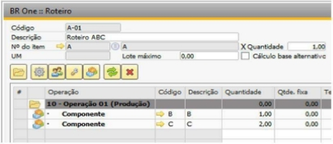 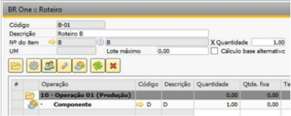
Ao executar o assistente de MRP, é recomendada a criação da solicitação de compra do item “C” e das ordens de produção dos itens “A” e “B”:
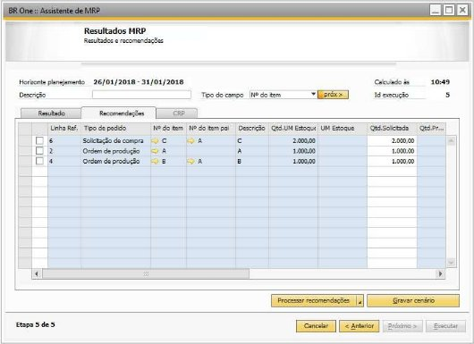Realizando o processamento dessas recomendações, os documentos serão criados e vinculados à ordem do item pai, nesse caso, o item “A”. A solicitação de compra do Item “C” e a Ordem de Produção do Item “B” são encontradas na aba “Compra/OP” da aba “Documentos”:
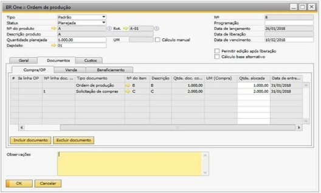O pedido de venda ao qual requisitou 1000 do item “A”, é encontrado na aba “Venda”:
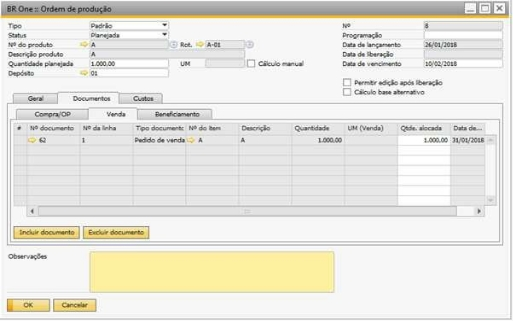Quando a flag da configuração desse processo está marcada, os documentos vinculados à ordem criada através da recomendação do MRP não são vinculados, assim, os documentos não são incluídos automaticamente na aba “Documentos”.
-Preencher campo programação dos documentos gerados com
Esse campo define se ao processar uma recomendação do MRP (Ordem de produção), no campo “Programação”, irá ser setado pelo “Item pai”, o “Id da execução do MRP” ou se ele ficará como “Nenhum”.
Nenhum: o campo “Programação” ficará vazio. Item pai: o campo “Programação” irá o Item pai da solicitação ou da ordem de produção.
Exemplo na ordem de produção:


Id da execução do MRP: no campo Programação irá o id da execução do MRP.
Exemplo Ordem de produção:


-Quantidade de dias entre operações
Esse campo define a quantidade de dias a serem considerados entre uma operação e outra, quando o cálculo das datas das operações de uma Ordem de produção (criado através do MRP ou tela de Ordem de produção).
Considerando o seguinte cenário:
Calendário com 8 horas disponíveis por dia e sem finais de semana.

Roteiro com os seguintes tempos variáveis em minutos:

Uma previsão de venda com quantidade 100 peças para o item do roteiro.
Ao executar o MRP no dia 18/07/2023, considerando somente esta previsão de venda, serão obtidos resultados diferentes para a data de liberação e lead time, dependendo do que for parametrizado na configuração.
Quando a configuração estiver com o valor 1, será adicionado 1 dia de diferença entre as operações.
Logo, a data de liberação será no dia 23/08/2023 e o lead time será de 10 dias.

Abaixo segue o detalhamento do cálculo realizado:

O cálculo da data é realizado de baixo para cima. O vencimento é para o dia 01/09/2023, então, a ordem de produção ficará pronta 1 dia antes, 31/08/2023.
O calendário possui 8 horas disponíveis por dia e a última operação precisa de 960 minutos (16 horas), então irá gastar o dia 31/08/2023 inteiro e o dia 30/08/2023 inteiro.
A operação anterior deveria terminar dia 28/08/2023, mas como a diferença de dias entre as operações é de 1 dia, o script irá estender o término para o dia 29/08/2023 e o início será no dia 25/08/2023 pois o calendário não considera finais de semana (26/08/2023 e 27/08/2023).
O término da operação seguinte deveria ser dia 23/08/2023, mas devido a configuração de 1 dia, será estendido para o dia 24/08/2023 e assim por diante para as demais operações.
Quando a configuração estiver com o valor 0 (zero), será considerado apenas o tempo do calendário configurado.
Logo, a data de liberação será no dia 23/06/2016 e o lead time será de 10 dias.

Abaixo, segue o detalhamento do cálculo realizado:

O cálculo da data é realizado de baixo para cima. O vencimento é para o dia 01/09/2023, então, a ordem de produção ficará pronta 1 dia antes, 31/08/2023.
O calendário possui 8 horas disponíveis por dia e a última operação precisa de 960 minutos (16 horas), então irá gastar o dia 31/08/2023 inteiro e o dia 30/08/2023 inteiro.
Como a configuraçõa indica qua quantidade de dias entre as operações é igual a zero, a data término da operação anterior, sempre será igual a data inicial da operação seguinte.
-Limite de memória para processo (MB)
Para que não haja um uso de memória maior que a quantidade disponível para o MRP, deve ser definido nesses campos o limite da memória quando o MRP estiver sendo processado. Não há limite máximo nem mínimo para a memória.
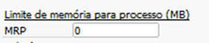-Limite de nível do Low Level Code (LLC)
Para que o sistema não trave, caso exista roteiros em loop infinito, pode-se definir um número máximo de nível que o cálculo de LLC irá descer para retornar com valores. Por padrão, esse valor é 50.
-Relatórios
Existe a possibilidade de gerar o relatório de Carga Máquina dentro do MRP. Esse campo permite selecionar o caminho desejado para salvar o relatório gerado.
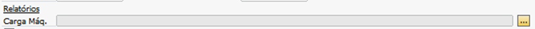Para gerar o relatório, o usuário deve clicar no botão “Relatório” e em “Carga Máxima”, disponível na aba “CRP” da tela de “Assistente de MRP”.

O relatório é proveniente do Crystal Reports e o caminho deve ser previamente configurado em seu respectivo campo. O relatório será gerado a partir do ID da execução do MRP e base em que for executado.
-Permitir geração de Pedido de Compras
O parâmetro “Permitir geração de Pedido de Compras” definirá se o usuário gerará solicitação de compras ou pedido de compras através do MRP.
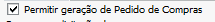Com o flag desmarcado, a opção de escolha estará bloqueada e com isso o addon irá gerar apenas “Solitações de compra”.
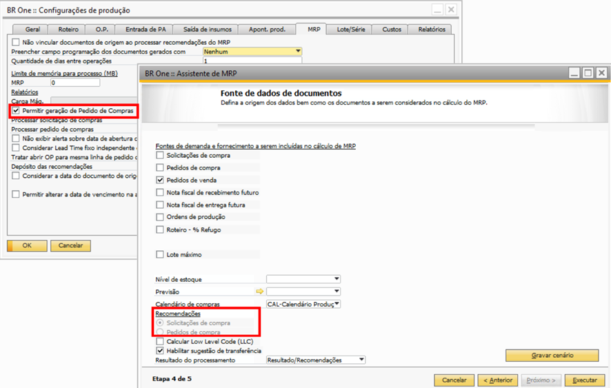Com o flag marcado, a opção de escolha estará desbloqueada e com isso o addon irá permitir que o usuário escolha entre gerar “Solitações de compra” ou “Pedidos de compra”.

-Processar solicitação de compras
O parâmetro “Processar solicitação de compras”** é utilizado para configurar como deverão ser processadas as recomendações de “Solicitações de compras” sugeridas pelo assistente de MRP.
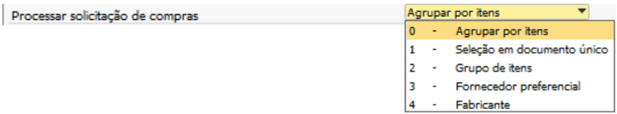Conforme print acima o usuário poderá escolher entre cinco opções para realizar o processamento da solicitação de compra:
Agrupar por itens:
Cria o documento de compra de acordo com os itens;
Seleção em documento único:
Todos os itens processados irão para o mesmo documento de compra;
Grupo de itens:
Os itens serão agrupados de acordo com o Grupo de itens;
Fornecedor preferencial:
Os itens serão agrupados de acordo com o Fornecedor preferencial.
Fabricante:
Os itens serão agrupados de acordo com o Fabricante.
-Processar pedido de compras
O parâmetro “Processar pedido de compras” é utilizado para configurar como deverão ser processadas as recomendações de “Pedidos de compras” sugeridas pelo assistente de MRP.
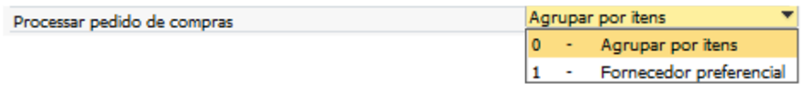Conforme print acima o usuário poderá escolher entre duas opções para realizar o processamento do pedido de compra:
Agrupar por itens:
Cria o documento de compra de acordo com os itens;
Fornecedor preferencial:
Os itens serão agrupados de acordo com o Fornecedor preferencial.
-Não exibir alerta sobre data de abertura de operação menor ou igual data atual
Este parâmetro indica se deve aparecer um alerta em tela quando usuário processar uma linha no “Assistente de MRP” onde a data do coluna “Data de liberação” seja igual ou menor que a data atual.
Quando a flag estiver marcada indica ao addon que a mensagem de alerta não deve ser exibida em tela para o usuário. Com a flag desmarcada, a mensagem será exibida:

Neste caso, o usuário poderá escolher entre três opções:
Sim: Ao clicar em sim, a linha indicada na mensagem será processada normalmente.
Não: Ao clicar em não, o processo será cancelado.
Sim p/ todos: Ao clicar em “Sim p/ todos”, todas as linhas selecionadas que possuam a data de liberação menor ou igual a data atual serão processadas normalmente.
-Considerar Lead Time fixo independente do calculado
Quando um PA estiver fixo em dias e a configuração “Considerar leadtime fixo independente do calculado” estiver marcada, todas as operações devem iniciar e terminar no mesmo dia.
Para o exemplo abaixo, será considerado que o calendário de compra e o calendário dos recursos é o mesmo, 8h por dia de segunda à sexta.
O item “PA-PREV” é um item pai e para ele, há o pedido de venda com a data de entrega para o dia 04/08/2023.

Roteiro do item “PA-PREV”:

O item “PA-PREV” tem leadtime fixo de 10 dias:

Ao rodar o MRP dia 18/07/2023, a seguinte recomendação foi feita:


Ambos os itens de compra A0001 e A0002 foram recomendados para compra no dia 20/07/2023 (quinta feira). Os componentes serão liberados no dia 24/07/2023 e ficarão prontos no dia 04/08/2023, contabilizando no total 10 dias úteis.
-Tratar abrir OP para mesma linha de pedido de venda vinculado
Este parametro foi criado com a finalidade de bloquear ou alertar inserção da Ordem de produção através da recomendação do MRP quando ela for vinculada a um pedido de venda e o mesmo já estiver vinculado à outra Ordem de produção que esteja com seu status diferente de Fechado ou Cancelado.
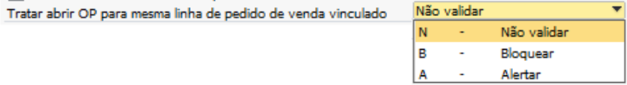Portanto, é possível selecionar três opções de configurção:
Não validar
Quando selecionado “Não validar”, nada ocorrerá e a “Ordem de produção” será inserida com o pedido de venda vinculado independentemente de o pedido estar vinculado ou não à outra ordem de produção.
Bloquear
Quando selecionado “Bloquear”, uma mensagem será exibida, e a ação será cancelada e recomendação não será executada.

BR One :: A OP a ser aberta para o item “x” já existe para a mesma linha do pedido de venda a ser vinculado.
Alertar
Quando selecionado “Alertar”, uma mensagem será exibida ao usuário solicitando a confirmação do processo.

BR One :: A OP a ser aberta para o item “x” já existe para a mesma linha do pedido de venda a ser vinculado. Deseja criar novamente?
Caso usuário aceite, a “Ordem de produção” será inserida normalmente e o “Pedido de venda” em questão será vinculado.
Caso usuário não aceite, o processo será interrompido e a “Ordem de produção” não será processada.
Existe também a possibilidade de negar todas as recomendações utilizando a opção “Não p/ todos”, entretanto, essa função só servirá para as recomendações seguintes, ou seja, todas as anteriores onde foi escolhida a opção “Sim” serão processadas.
-Depósito das recomendações
No campo “Depósito das recomendações” será definido a origem do depósito das linhas das recomendações de compra.
É possível selecionar duas opções:
Depósito do roteiro:
Com essa configuração o depósito utilizado, será o depósito do roteiro do item.
Depósito padrão do item:
Com essa configuração o depósito utilizado, será o depósito padrão do item.
-Considerar a data do documento de origem da demanda
Quando a flag estiver marcada, será considerada a data da fonte de demanda, ou seja, os componentes de um semiacabado terão a data anterior da liberação da OP.

Quando estiver desmarcado, será considerado o cálculo dos leadtimes dos processos, então, será considerada a compra para mesma data de vencimento da OP.

-Manter data de origem do documento da demanda para cálculos de fornecimento
Este parâmetro indica se a data de origem dos documentos de demanda será mantida e utilizada para realizar os cálculos de fornecimento.
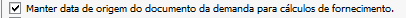Quando o parâmetro está marcado o addon irá manter as datas de origem do documento de demanda para realizar os cálculos de fornecimento, neste caso o MRP pode exibir datas no passado.

Quando o parâmetro está desmarcado o addon não irá manter as datas de origem do documento de demanda para realizar os cálculos de fornecimento, neste caso o MRP não irá exibir as datas no passado.

-Manter data de origem do documento da demanda para cálculos de fornecimento
Este parâmetro indica a possibilidade de alteração da “Data de vencimento” na aba, “Recomendações” da tela de “Assistente de MRP”.
Quando o parâmetro está marcado o addon irá permitir a alteração do campo “Data de vencimento” da aba, “Recomendações” da tela de “Assistente de MRP”.

Quando o parâmetro está desmarcado o addon não irá permitir a alteração do campo “Data de vencimento” da aba, “Recomendações” da tela de “Assistente de MRP”.

-Calcular estoque mínimo como demanda no passado
Este parâmetro indica o estoque mínimo como um fornecimento no passado, considerando assim essa nessecidade nos cálculos realizados juntamente com as demandas que estão vencidas no passado.
Este parâmetro pode ser marcado apenas quando o parâmetro “Manter data de origem do documento da demanda para cálculos de fornecimento.” estiver marcado.
Caso usuário tente marcar o parametro “Calcular estoque mínimo como demanda no passado” sem marcar o parametro citado acima, o addon irá retornar a seguinte mensagem de erro:

BR One :: Não é possível marcar, pois o parâmetro ‘Manter data da origem do documento da demanda para calulos de fornecimentos’ está desmarcado.
Caso parâmetro esteja desmarcado e o usuário desmarque o flag “Manter data de origem do documento da demanda para cálculos de fornecimento.” o mesmo será desmarcado automáticamente.
Para os exemplos abaixo, considere que o item “A0001” possui configurado um estoque mínimo de 1.000 peças.

Portanto, quando marcado, o parâmetro “Calcular estoque mínimo como demanda no passado” considera as nessidades de estoque mínimo juntamente nos cálculos realizados com vencimento no passado.
Utilizando o cenário proposto acima como exemplo, ao executar o Assistente de MRP com a configuração de nível de estoque igual a “Mínimo”, o addon irá cálcular a necessidade de estoque mínimo como demanda no passado.

Portanto, quando desmarcado, o parâmetro “Calcular estoque mínimo como demanda no passado” considera as nessidades de estoque mínimo normalmente para o dia de execução do MRP.
Utilizando o cenário proposto acima como exemplo, ao executar o Assistente de MRP com a configuração de nível de estoque igual a “Mínimo”, o addon irá cálcular a necessidade de estoque mínimo como demanda normal.

-Pasta de resultado do MRP
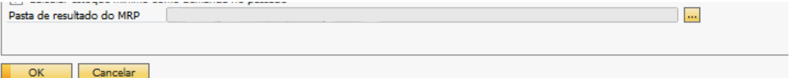Com esse campo é Possivel determinar aonde queremos que os dados processados pelo MRP fiquem.
Clicando nos “[…]” o add-on irá abrir esta tela:
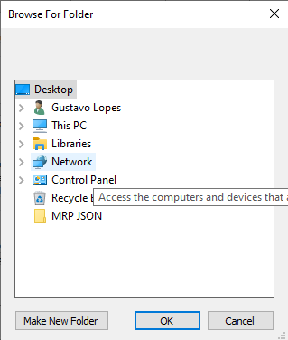Após selecionar a pasta, note que o caminho foi preenchido:
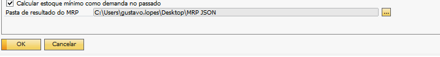Esse caminho será aonde ficara salvo o que foi processado pelo MRP.
Para gerar o documento é necessario que faça um processo com o MRP.
Depois que finalizar volte para o inicio e clique em histórico:
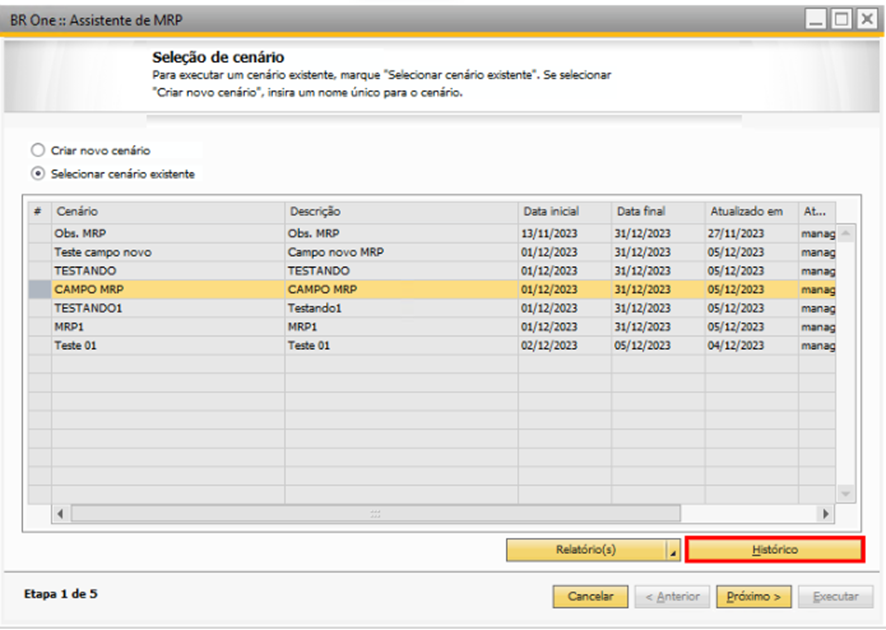Abrirá está tela:
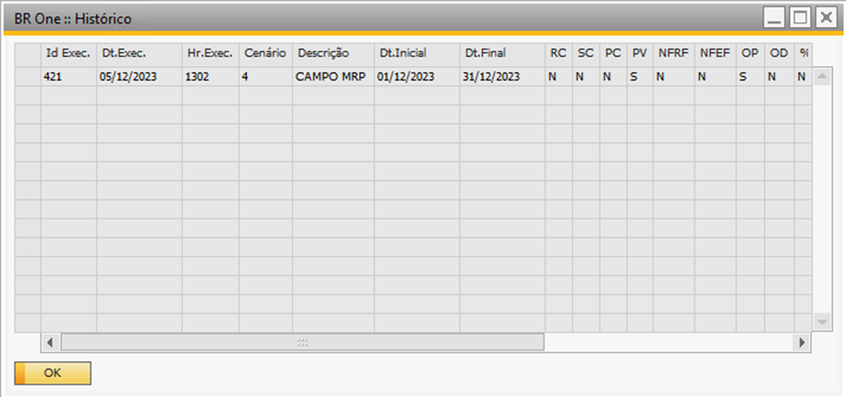Selecionando a linha e clicando em “OK” Pode notar que ele abrirá uma lista de sugestões que foi gerado no processo.
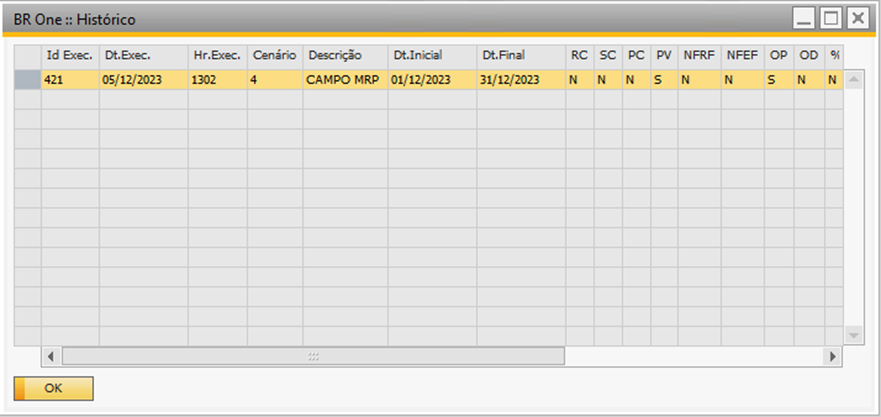 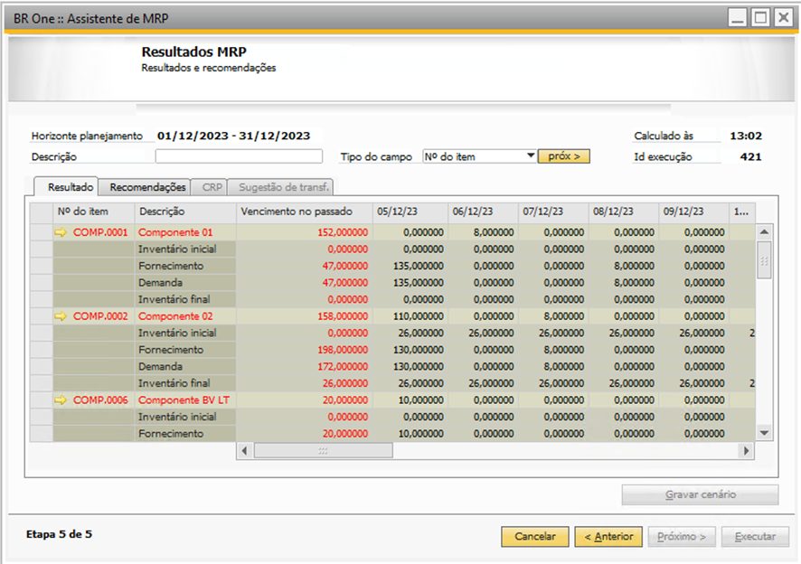Dessa forma podendo visualizar o processo de forma mais rapida e prática.
Não agrupar linhas de compra por data de entrega:
Quando o parâmetro Não agrupar linhas de compra por data de entrega estiver marcado:
Ao processar as compras, deve criar linhas separadas para cada item selecionado, mesmo que a data de entrega seja a mesma.
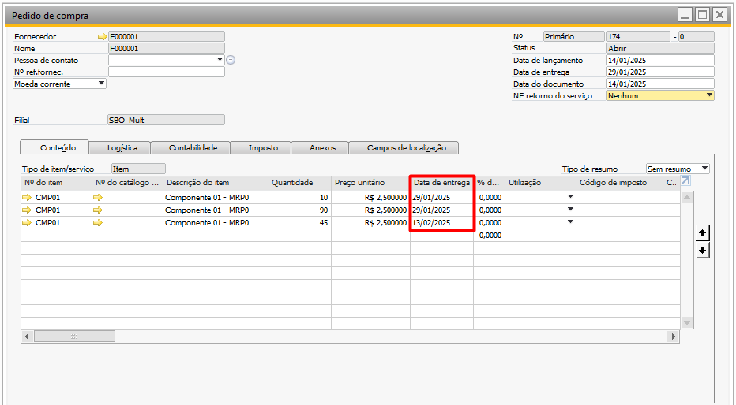E além de preencher os campos de referência do SAP para exibir o documento base que originou a solicitação de compra ou pedido de compra através do MRP.
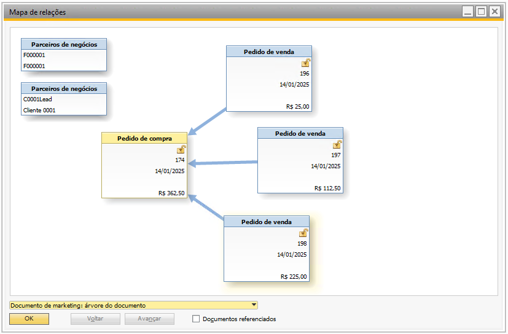Para assegurar o vínculo correto com os documentos, é imprescindível que, ao processar uma solicitação ou pedido de compra, os itens a serem tratados não possuam “Nº do item pai” vinculados e que o processamento seja realizado utilizando a opção “Processar recomendações”, em vez de “Processar grupo”.
Quando o parâmetro Não agrupar linhas de compra por data de entrega estiver desmarcado (padrão):
Continuará funcionando conforme é feito pelo BR One;
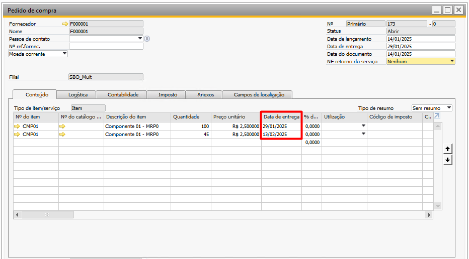